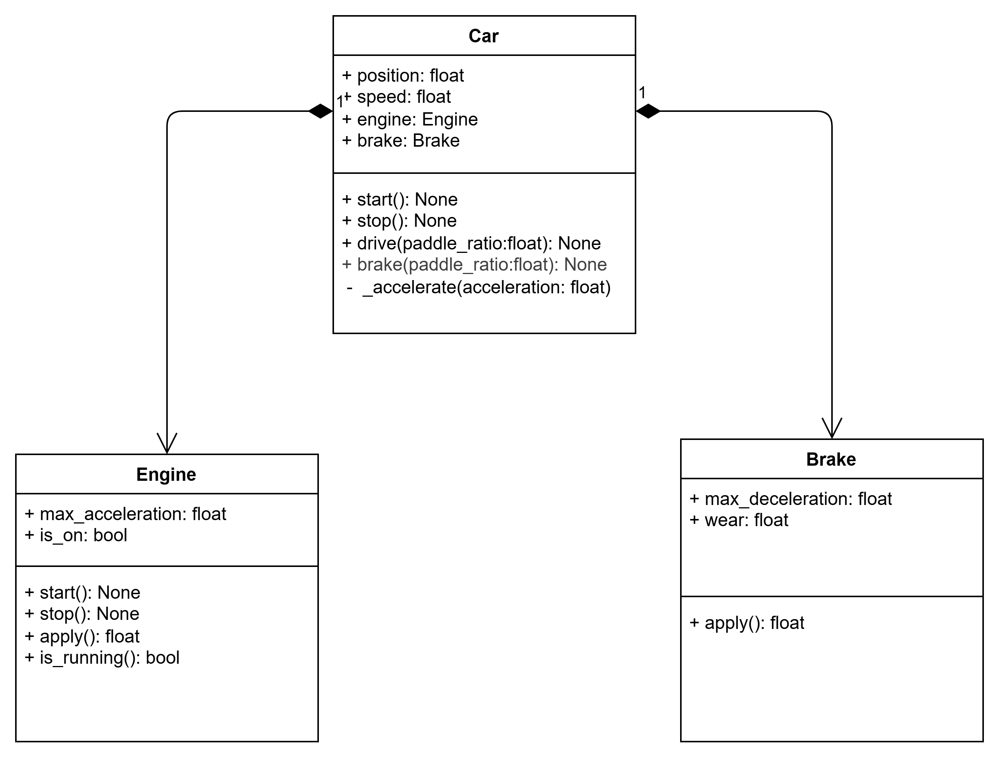

Unit 03: Composition
In Object-Oriented Programming (OOP), composition is another fundamental design principle: objects can be constructed from other objects. This allows you to build complex systems flexibly, by combining simpler, well-defined components.
Car Example
Let’s build on our car example from Unit 02 to illustrate composition.
Creating Separate Classes for Engine and Brake
A real car has an engine system and has a brake system. Instead of bundling these directly into the Car, we can create distinct classes for each. This enables modular design and reuse.
The Engine class models an engine that can be started or stopped, and calculates acceleration based on how much you press the pedal.
1 2 3 4 5 6 7 8 9 10 11 12 13 14 15 16 17 18 19 20 21 22 23 | |
The Brake class simulates how a brake gets worn down with use and calculates braking force accordingly.
1 2 3 4 5 6 7 8 9 10 11 12 13 | |
Composing Engine and Brake in Car
By using the Engine and Brake objects inside the new Car class, we demonstrate composition:
1 2 3 4 5 6 7 8 9 10 11 12 13 14 15 16 17 18 19 20 21 22 23 24 25 26 27 28 29 30 31 | |
Class Diagram
The class diagram for the Car class looks like this:

The diamond-shaped arrows represents a 'has-a' relationship between objects
Dangers of Composition: References / Aliasing
A potential hazard of composition in Python is object aliasing-because objects are reference types.
Example
1 2 3 4 5 6 7 8 9 10 11 12 13 14 15 16 17 | |
Study the above code. What do you expect to happen here and why? (hint: a line will throw an error)
1 2 3 4 5 6 7 8 9 | |
The above example, we only created one engine object which both object are referencing. In other words, both cars are sharing one engine.
1 2 3 4 5 | |
Thus, when car1.stop() is called, it shuts down the shared engine. So, even though you're calling car2.drive(0.3) next, the engine is already stopped-triggering an exception.
Unintended side effects
When you pass objects in Python, you are passing references to the actual objects and not creating copies (unlike with primitive types like int, float, or str). Always be mindful of this, especially when composing objects as sharing objects (aliasing) can have unintended side effects if not managed carefully!